5 Visualizing data in R
In this chapter you will learn the basics to build insightful graphics in R.
5.1 Basic plot instructions
5.1.1 Scatterplot
Your starting point is the construction of a scatterplot. You’ll work with the Journals data from the AER package.
title
APEL Asian-Pacific Economic Literature
SAJoEH South African Journal of Economic History
CE Computational Economics
MEPiTE MOCT-MOST Economic Policy in Transitional Economics
JoSE Journal of Socio-Economics
LabEc Labour Economics
publisher society price pages charpp citations foundingyear
APEL Blackwell no 123 440 3822 21 1986
SAJoEH So Afr ec history assn no 20 309 1782 22 1986
CE Kluwer no 443 567 2924 22 1987
MEPiTE Kluwer no 276 520 3234 22 1991
JoSE Elsevier no 295 791 3024 24 1972
LabEc Elsevier no 344 609 2967 24 1994
subs field
APEL 14 General
SAJoEH 59 Economic History
CE 17 Specialized
MEPiTE 2 Area Studies
JoSE 96 Interdisciplinary
LabEc 15 Labor [1] "title" "publisher" "society" "price" "pages"
[6] "charpp" "citations" "foundingyear" "subs" "field" [1] 123 20 443 276 295 344 90 242 226 262 279 165 242 905 355
[16] 375 135 171 284 242 371 115 355 355 835 223 172 62 191 411
[31] 274 130 100 80 235 392 410 464 650 558 317 495 535 123 717
[46] 481 54 379 168 82 355 95 240 448 255 448 392 475 85 108
[61] 394 336 565 255 165 99 203 318 476 473 186 170 824 805 132
[76] 50 424 130 90 805 96 448 130 595 474 410 395 437 270 265
[91] 899 133 262 506 1140 211 799 760 442 296 272 45 614 436 481
[106] 95 357 280 142 710 490 870 1147 743 759 36 224 82 160 1170
[121] 90 742 575 163 175 120 590 2120 205 128 1539 346 1046 97 686
[136] 914 85 206 1154 45 1146 95 138 115 640 122 110 923 1000 1234
[151] 1492 810 90 177 74 113 145 590 1154 1450 1431 47 45 47 81
[166] 1010 334 190 180 1893 1400 301 1339 90 310 226 148 159 178 47 Min. 1st Qu. Median Mean 3rd Qu. Max.
20 134 282 418 541 2120 In the next block of code, we construct a scatterplot of the number of subscriptions versus the price per citation.
with(Journals, plot(log(subs), log(citeprice)))
with(Journals, rug(log(subs))) # adds ticks, thus visualizing the marginal distributions of
# the variables, along one or both axes of an existing plot.
with(Journals, rug(log(citeprice), side = 2))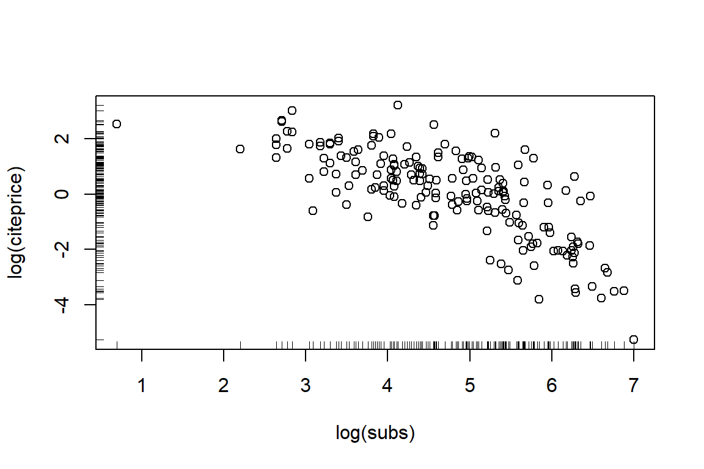
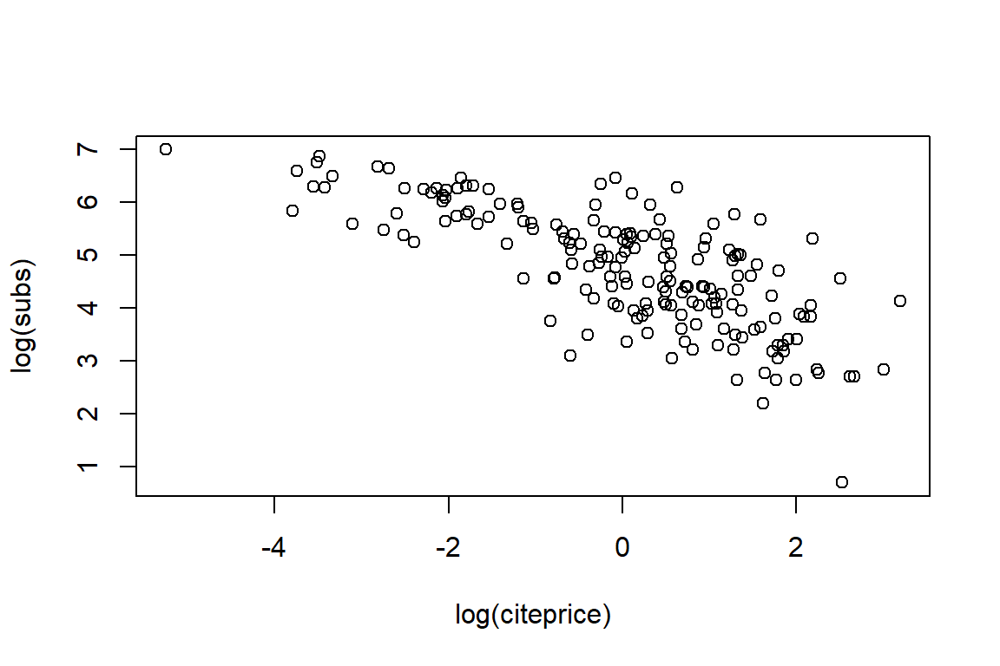
R has many plotting options that allow you to flex a graph. For example, pch for the plotting character, col for the color of the plotting characters, xlim and ylim to adjust the limits on the x- and y-axis of the scatterplot. To add a legend, you can use the legend() function.
plot(
log(citeprice) ~ log(subs),
data = Journals,
pch = 19,
col = "blue",
xlim = c(0, 8),
ylim = c(-7, 4),
main = "Library subscriptions"
)
rug(log(Journals$subs))
rug(log(Journals$citeprice), side = 2)
# subset data, look at journal entitled "Econometrica"
journal <- "Econometrica"
journal_info <- subset(Journals, title == journal)
x.val <- log(journal_info$subs)
y.val <- log(journal_info$citeprice)
text(x.val, y.val, journal, pos = 2)
legend("topright", "Individual observations", col = "blue", pch = 19)
You can even use your own images as plotting characters! In case you want to find out how you do this, just go to http://www.statisticstoproveanything.com/2013/09/using-custom-images-as-pch-values-in-r.html 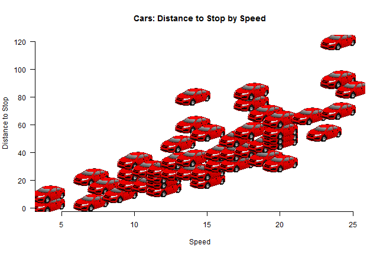
5.1.2 Saving the scatterplot as a pdf
It is often very useful to directly store your customized graph as a pdf (with appropriate dimensions) in a particular directory on your machine. Next to saving a plot as pdf, you can also bmp, jpeg, png and so on (see ?png).
path <- tempdir()
graph.path <- file.path(path, "myfile.pdf")
pdf(graph.path, height = 5, width = 6)
plot(log(citeprice)~log(subs), data = Journals, pch = 19, col = "blue", xlim =
c(0, 8), ylim = c(-7, 4),
main = "Library subscriptions")
rug(log(Journals$subs))
rug(log(Journals$citeprice),side=2)
journal <- "Econometrica"
journal_info <- subset(Journals, title==journal)
x.val <- log(journal_info$subs)
y.val <- log(journal_info$citeprice)
text(x.val, y.val, journal, pos=2)
dev.off()5.1.3 The curve() function
This function draws a curve corresponding to a function over the interval [from, to].
curve(dnorm, from = -5, to = 5, col = "slategray", lwd = 3, main = "Density of the standard normal distribution")
text(-5, 0.3, expression(f(x) == frac(1, sigma ~~ sqrt(2*pi)) ~~ e^{-frac((x - mu)^2, 2*sigma^2)}), adj = 0)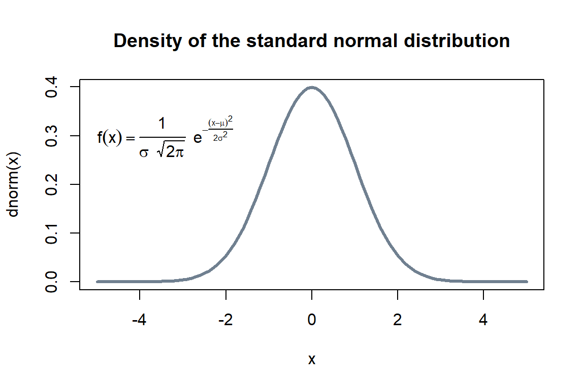
5.2 More fancy plots
R has many dedicated packages for advanced plotting. You will work with two of them in this Section.
5.2.1 Creating graphics with ggplot2
ggplot2 is a package created and maintained by prof. Hadley Wickham, it’s aim is to Create Elegant Data Visualisations Using the Grammar of Graphics. Here is the basic explanation of how ggplot2 works from (Grolemund and Wickham 2016).
With ggplot2, you begin a plot with the function ggplot(). ggplot() creates a coordinate system that you can add layers to. The first argument of ggplot() is the dataset to use in the graph. So ggplot(data = mpg) or ggplot(mpg) creates an empty graph.
You complete your graph by adding one or more layers to ggplot(). The function geom_point() adds a layer of points to your plot, which creates a scatterplot. ggplot2 comes with many geom functions that each add a different type of layer to a plot.
Each geom function in ggplot2 takes a mapping argument. This defines how variables in your dataset are mapped to visual properties. The mapping argument is always paired with aes(), and the \(x\) and \(y\) arguments of aes() specify which variables to map to the \(x\) and \(y\) axes. ggplot2 looks for the mapped variable in the data argument, in this case, mpg.
library(ggplot2)
# use default theme
ggplot(data = mtcars, mapping = aes(x = hp, y = mpg)) +
geom_point(shape=1, alpha = 1/2)+
geom_smooth() `geom_smooth()` using method = 'loess' and formula 'y ~ x'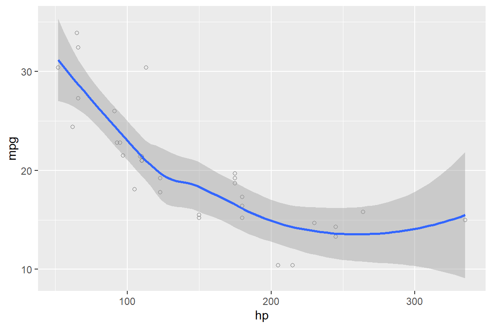
`geom_smooth()` using method = 'loess' and formula 'y ~ x'
# use black and white lay-out
ggplot(mtcars, aes(x = hp, y = mpg)) + theme_bw() +
geom_point(shape=1, alpha = 1/2)+
geom_smooth() `geom_smooth()` using method = 'loess' and formula 'y ~ x'You can add a third variable to a two dimensional scatterplot by mapping it to an aesthetic. An aesthetic is a visual property of the objects in your plot. Aesthetics include things like the size, the shape, or the color of your points. You can display a point in different ways by changing the values of its aesthetic properties.
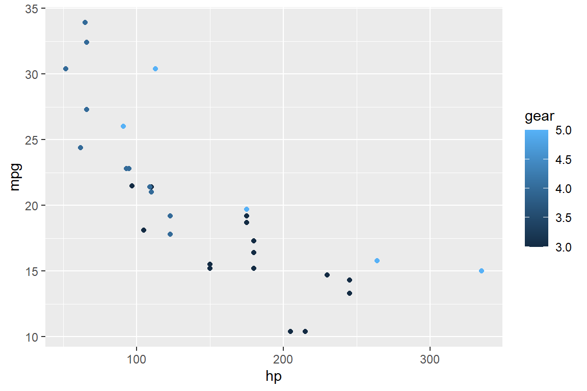
Or you could have mapped this variable to the alpha aesthetic, which controls the transparency of the points, or the shape of the points.
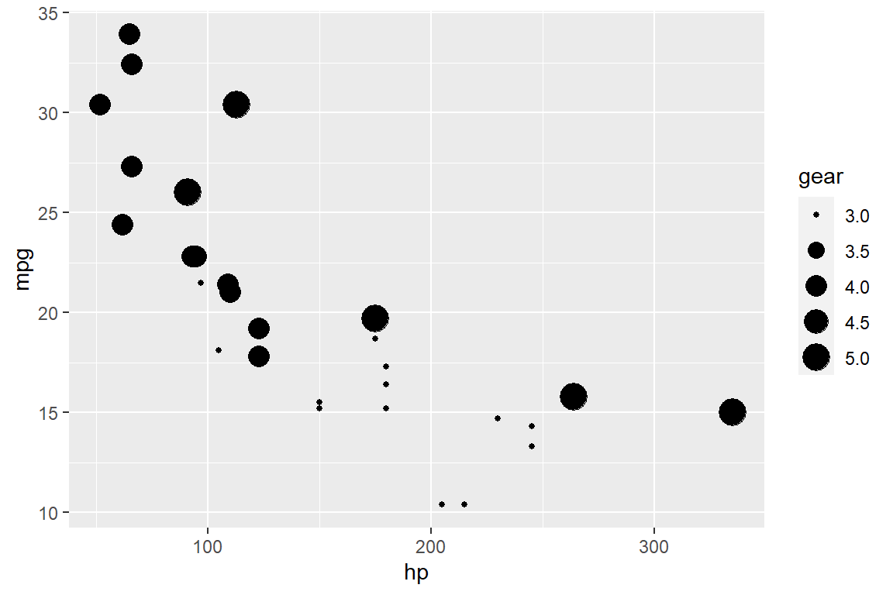
You’ll now construct a boxplot of mpg per cyl using ggplot().
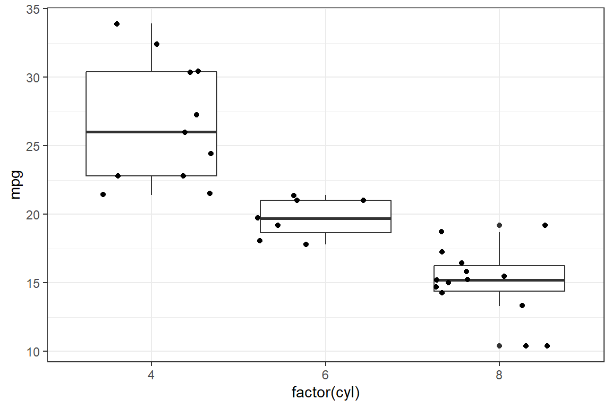 Another way to code the same example
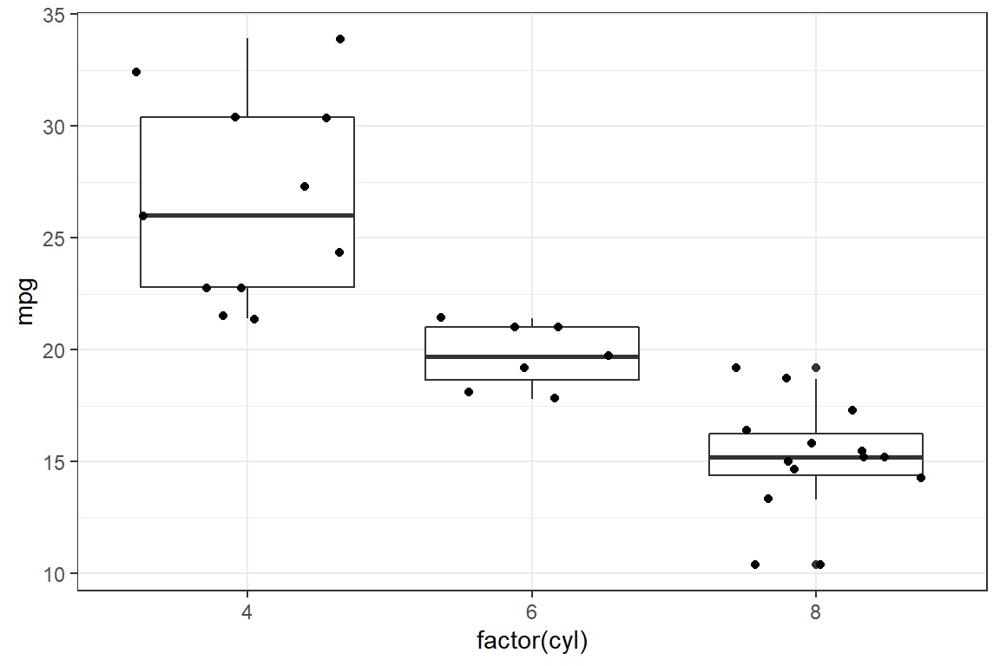
5.2.2 Fancy correlation plots
You use the package corrplot to visualize correlations between variables. For more examples, see corrplot.
corrplot 0.84 loaded num [1:11, 1:11] 1 -0.852 -0.848 -0.776 0.681 ...
- attr(*, "dimnames")=List of 2
..$ : chr [1:11] "mpg" "cyl" "disp" "hp" ...
..$ : chr [1:11] "mpg" "cyl" "disp" "hp" ... mpg cyl disp hp drat wt qsec vs
mpg 1.00000 -0.85216 -0.84755 -0.77617 0.681172 -0.86766 0.418684 0.66404
cyl -0.85216 1.00000 0.90203 0.83245 -0.699938 0.78250 -0.591242 -0.81081
disp -0.84755 0.90203 1.00000 0.79095 -0.710214 0.88798 -0.433698 -0.71042
hp -0.77617 0.83245 0.79095 1.00000 -0.448759 0.65875 -0.708223 -0.72310
drat 0.68117 -0.69994 -0.71021 -0.44876 1.000000 -0.71244 0.091205 0.44028
wt -0.86766 0.78250 0.88798 0.65875 -0.712441 1.00000 -0.174716 -0.55492
qsec 0.41868 -0.59124 -0.43370 -0.70822 0.091205 -0.17472 1.000000 0.74454
vs 0.66404 -0.81081 -0.71042 -0.72310 0.440278 -0.55492 0.744535 1.00000
am 0.59983 -0.52261 -0.59123 -0.24320 0.712711 -0.69250 -0.229861 0.16835
gear 0.48028 -0.49269 -0.55557 -0.12570 0.699610 -0.58329 -0.212682 0.20602
carb -0.55093 0.52699 0.39498 0.74981 -0.090790 0.42761 -0.656249 -0.56961
am gear carb
mpg 0.599832 0.48028 -0.550925
cyl -0.522607 -0.49269 0.526988
disp -0.591227 -0.55557 0.394977
hp -0.243204 -0.12570 0.749812
drat 0.712711 0.69961 -0.090790
wt -0.692495 -0.58329 0.427606
qsec -0.229861 -0.21268 -0.656249
vs 0.168345 0.20602 -0.569607
am 1.000000 0.79406 0.057534
gear 0.794059 1.00000 0.274073
carb 0.057534 0.27407 1.000000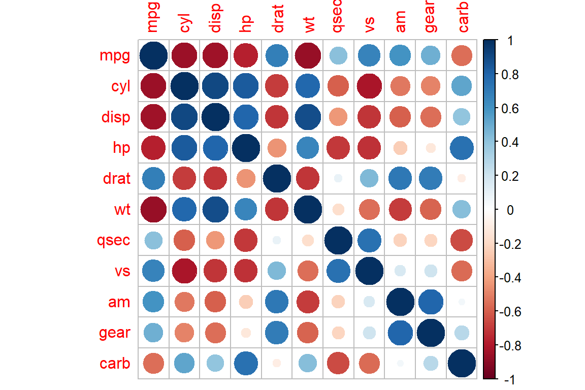
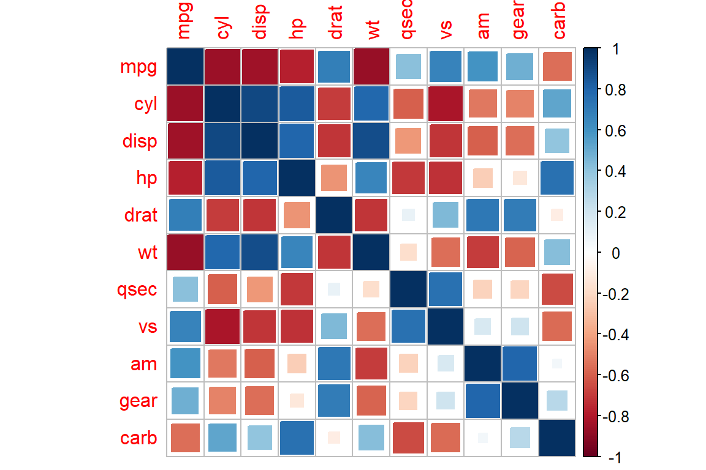
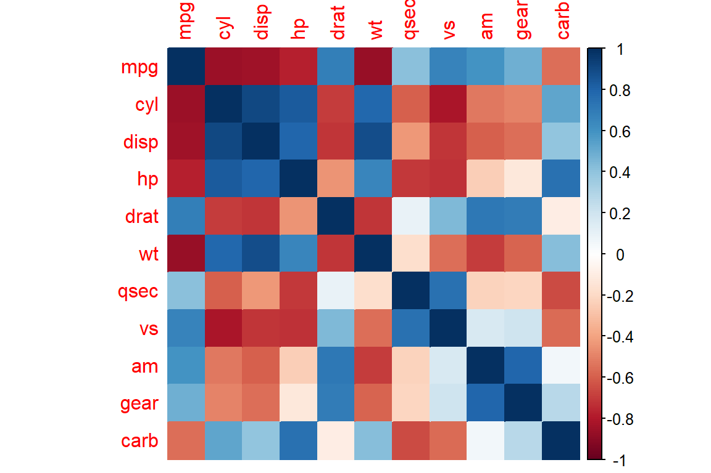
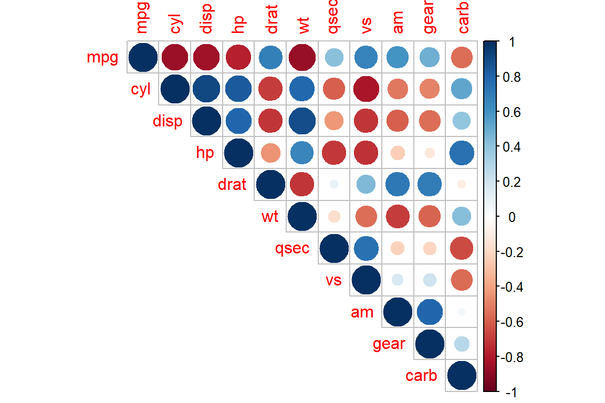
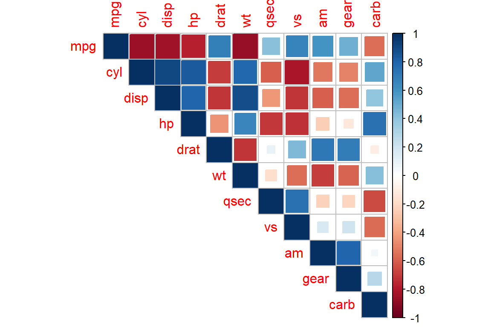
5.3 Exercises
Learning check
Use the Danish fire insurance losses. Plot the arrival of losses over time. Use
type= "l"for a line plot, label the \(x\) and \(y\)-axis, and give the plot a title usingmain.Do the same with instructions from
ggplot2. Get inspiration from R for Data Science and usegeom_line()to create the line plot.Use the data set ‘car_price.csv’ available in the documentation.
- Import the data in R.
- Explore the data.
- Make a scatterplot of price versus income, use basic plotting instructions and use
ggplot2. - Add a smooth line to each of the plots (using
linesto add a line to an existing plot andlowessto do scatterplot smoothing and usinggeom_smoothin theggplot2grammar).
- Use the
mpgdata set. Work through the following steps. The data contains observations collected by the US Environment Protection Agency on 38 models of car.
- Explore the data.
- Plot
displ, a car’s engine size, in litres on the \(x\)-axis andhwy, on the \(y\)-axis, that is the car’s fuel efficiency on the highway, in miles per gallon (mpg). - Now do the same but use different colors for the points, based on the
classvariable inmpg. Add a smooth line.